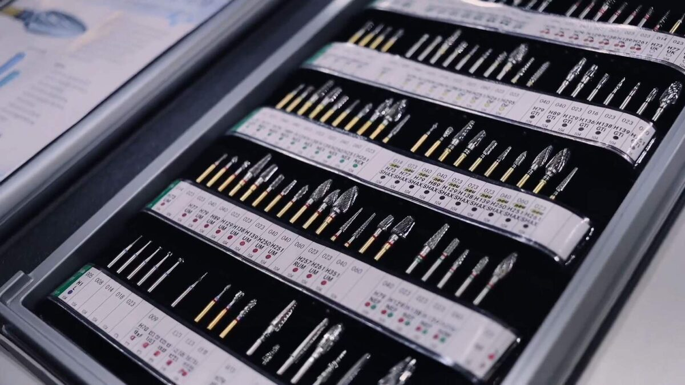
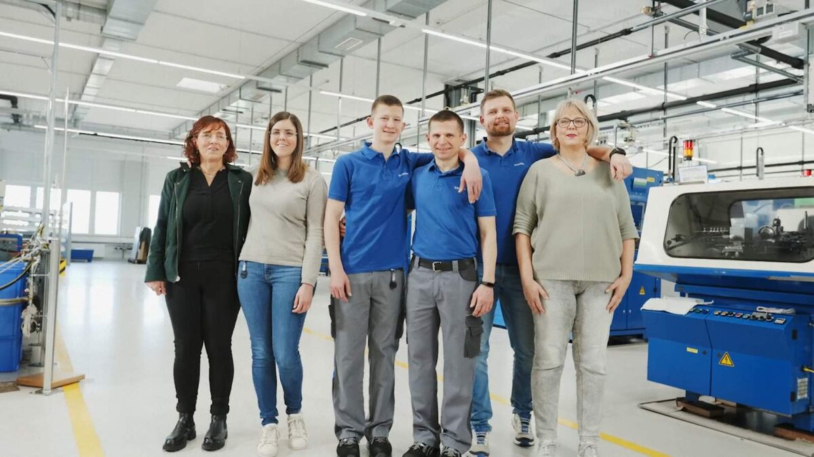

Ein Jahrhundert Brasseler: Unser Jubiläum 2023
Seit mehr als 100 Jahren zeichnen Optimismus, Stärke und Verbundenheit Brasseler als wertebasiertes Familienunternehmen aus. Was mit der Gründung einer kleinen Zahnbohrerfabrik begann, hat durch eine visionäre Idee, Mut und Weitblick zu internationalem Erfolg als Medtech-Unternehmen geführt. Dass unser Unternehmen seit über einem Jahrhundert besteht, verdanken wir unserer Innovationskraft, unserem technischen Know how und vor allem dem fortwährenden Dialog mit unseren Kunden und Partnern. Gemeinsam arbeiten wir an dem Ziel, die Lebensqualität der Menschen zu verbessern.
2023 haben wir unser 100-jähriges Firmenjubiläum mit dem Motto „100 years of preparation for tomorrow“ gefeiert. Hier finden Sie Impressionen aus diesem besonderen Jahr.

„100 years of preparation for tomorrow heißt, den Blick nach vorne zu richten und die sich bietenden Möglichkeiten zu nutzen.
Unser Anspruch ist es, als globaler Player Standards im Bereich der Zahn- und Knochenbehandlung zu setzen.“
Stephan Köhler,
Sprecher der Geschäftsleitung
Unsere Jubiläumsevents.
Festakt
100-Jahre Feier
Ruheständler
Nico Santos
Fußball- und Freizeittag
Komet USA
Komet Italia
Komet France
Richtfest Neubau
Unser Jubiläumsjahr.

Schöne Feiertage
20.12.2023
Ein ereignisreiches Jahr neigt sich dem Ende zu. Wir möchten unseren herzlichen Dank aussprechen, dass Sie uns durch unser Jubiläumsjahr begleitet haben – 100 𝘠𝘦𝘢𝘳𝘴 𝘰𝘧 𝘗𝘳𝘦𝘱𝘢𝘳𝘢𝘵𝘪𝘰𝘯 𝘧𝘰𝘳 𝘛𝘰𝘮𝘰𝘳𝘳𝘰𝘸 war ein wichtiger Meilenstein für uns.

Unser Weg zum Weltmarktführer in der Dentalindustrie
11.12.2023
Im aktuellen Short der Reihe „Insights Brasseler“ vermittelt unser Geschäftsführer Klaus Rübesamen, wie wir uns mit unserer Produktmarke Komet zu einer weltweit führenden Marke entwickelt haben.

Gemeinsam in Lemgo und der Region
13.11.2023
Seit vielen Jahrzehnten sind wir in Lemgo beheimatet und haben uns zu einem der größten regionalen Arbeitgeber entwickelt.
Markus Baier, Bürgermeister der Alten Hansestadt Lemgo, gibt im neuen Short der Reihe „Insights Brasseler“ Einblicke in unsere Zusammenarbeit und deren Bedeutung für die örtliche Wirtschaft.

Richtfest für Neubau in Lemgo
06.11.2023
Am 20. Oktober haben wir einen weiteren, wichtigen Meilenstein in diesem Jahr erreicht: das Richtfest unseres neuen Firmengebäudes „Gebäude 2022“ in Lemgo. Es ist ein wichtiger Baustein auf unserem Weg zu Fertigungsexzellenz auf höchstem Niveau: datenbasiert, Industrie 4.0 als Teil unserer DNA, Lean Management. Die in 2018 begonnene Transformation trägt dazu bei, unsere internationale Wettbewerbsfähigkeit auszubauen.

Bei Brasseler macht der Mensch den Unterschied.
19.10.2023
Das Potenzial und die Einzigartigkeit eines Jeden in unserer Gemeinschaft sind die treibende Kraft hinter Innovation und Fortschritt. Wenn wir uns weiterentwickeln, füreinander da sind und an unsere Fähigkeiten glauben, können wir gemeinsam Großes erreichen. Unsere Werte und unsere Haltung sind dabei die Grundlage für nachhaltigen Erfolg.

Brasseler startet Content-Kampagne „Insights Brasseler“
20.09.2023
Warum „Insights Brasseler“? Wir möchten Ihnen unsere Strategie, unsere Haltung und Werte sowie den besonderen Brasseler-Spirit näherbringen und so Ihr Wissen über unser Unternehmen mit wertvollen Informationen ergänzen.